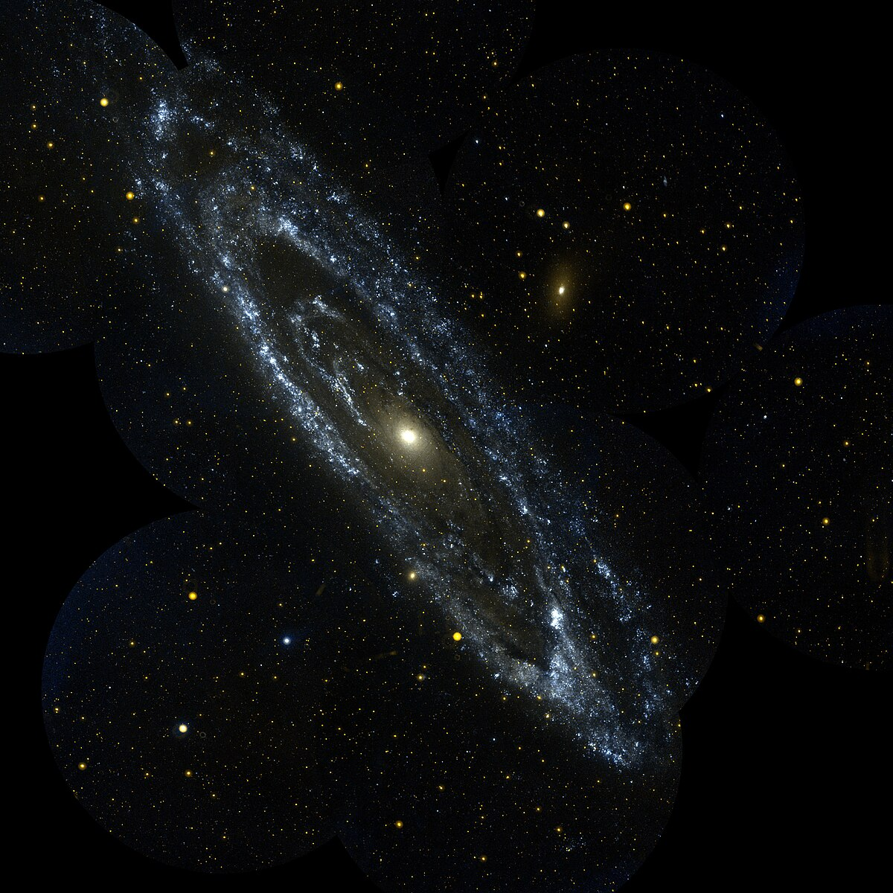

Cosmology (from Ancient Greek κόσμος (kósmos) 'world', and -λογία (-logía) 'study of') is a branch of physics and metaphysics dealing with the nature of the universe. The term cosmology was first used in English in 1656 in Thomas Blount's Glossographia,[2] and in 1731 taken up in Latin by German philosopher Christian Wolff, in Cosmologia Generalis.[3] Religious or mythological cosmology is a body of beliefs based on mythological, religious, and esoteric literature and traditions of creation myths and eschatology. In the science of astronomy, cosmology is concerned with the study of the chronology of the universe. Physical cosmology is the study of the observable universe's origin, its large-scale structures and dynamics, and the ultimate fate of the universe, including the laws of science that govern these areas.[4] It is investigated by scientists, including astronomers and physicists, as well as philosophers, such as metaphysicians, philosophers of physics, and philosophers of space and time. Because of this shared scope with philosophy, theories in physical cosmology may include both scientific and non-scientific propositions and may depend upon assumptions that cannot be tested. Physical cosmology is a sub-branch of astronomy that is concerned with the universe as a whole. Modern physical cosmology is dominated by the Big Bang Theory which attempts to bring together observational astronomy and particle physics;[5][6] more specifically, a standard parameterization of the Big Bang with dark matter and dark energy, known as the Lambda-CDM model. Theoretical astrophysicist David N. Spergel has described cosmology as a "historical science" because "when we look out in space, we look back in time" due to the finite nature of the speed of light.[7]
Physics and Astrophysics have played central roles in shaping our understanding of the universe through scientific observation and experiment. Physical cosmology was shaped through both mathematics and observation in an analysis of the whole universe. The universe is generally understood to have begun with the Big Bang, followed almost instantaneously by cosmic inflation, an expansion of space from which the universe is thought to have emerged 13.799 ± 0.021 billion years ago.[8] Cosmogony studies the origin of the universe, and cosmography maps the features of the universe. In Diderot's Encyclopédie, cosmology is broken down into uranology (the science of the heavens), aerology (the science of the air), geology (the science of the continents), and hydrology (the science of waters).[9] Metaphysical cosmology has also been described as the placing of humans in the universe in relationship to all other entities. This is exemplified by Marcus Aurelius's observation that a man's place in that relationship: "He who does not know what the world is does not know where he is, and he who does not know for what purpose the world exists, does not know who he is, nor what the world is."[10]
 Cosmology page| First cell | Second cell |
| Third cell | Fourth cell |